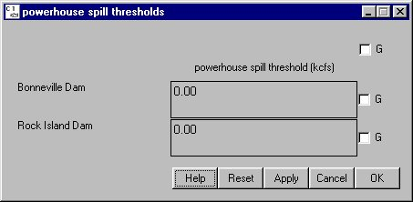

Powerhouse Spill Thresholds opens a window for setting the maximum amount of spill allowed (in kcfs) at each primary powerhouse, set in Powerhouse Priority window, before the secondary powerhouse is used.
Powerhouse Spill Thresholds opens a window for setting the maximum amount of spill allowed (in kcfs) at each primary powerhouse, set in Powerhouse Priority window, before the secondary powerhouse is used.
Selecting DamPowerhouse Spill Thresholds opens a window for setting the maximum amount of spill allowed (in kcfs) at each primary powerhouse, set in Powerhouse Priority window, before the secondary powerhouse is used.
This is a Slider Input window.

Powerhouse Spill Thresholds window